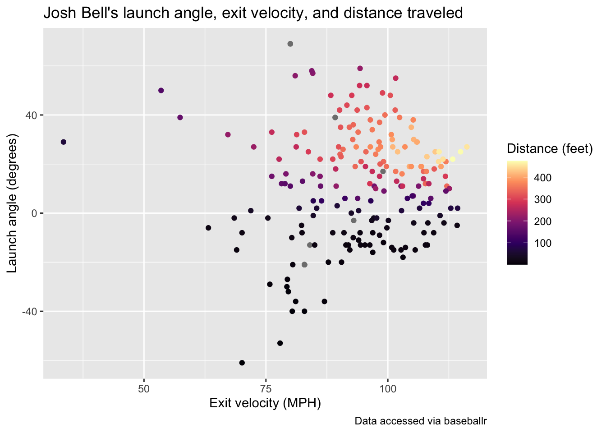
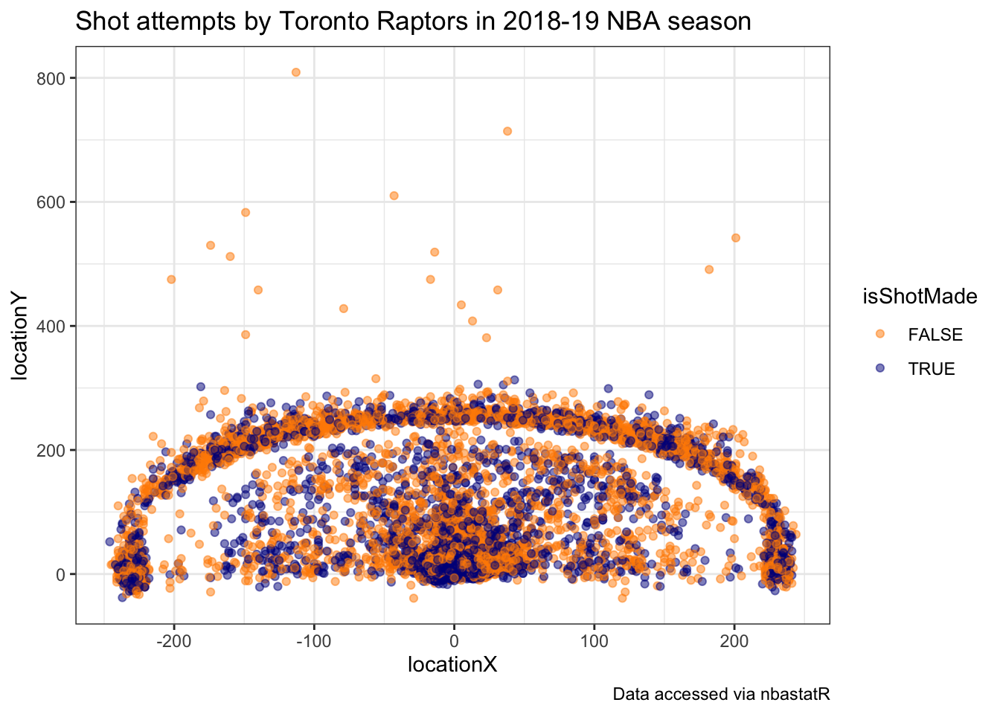

More resources
So far in this course you’ve worked with data that we had already prepared for you. It turns out that there are many R packages and tools that you can use to get data from a variety of different sources. Below, we will provide a brief walkthrough of just a few of these resources.
Lahman
The Lahman Baseball Database is a popular resource created by Sean Lahman with historical data going back to 1871. Rather than having to access the database directly via complicated computing procedures, there is an R package we can install to access the data instead. The following code installs the package from the CRAN:
Next we load the package, and checkout what datasets are available:
There is an incredible amount of data here going up through the 2018 season (it updates following the end of each season). As an example, let’s access the Teams dataset, use a group_by operation to calculate the number of strikeouts each year since 1871, and plot the line over time:
> data("Teams")
> Teams %>%
+ group_by(yearID) %>%
+ summarize(n_so = sum(SO, na.rm = TRUE)) %>%
+ ggplot(aes(x = yearID, y = n_so)) +
+ geom_line() +
+ labs(x = "Year", y = "Number of strikeouts",
+ title = "Total number of strikeouts in each baseball season since 1871",
+ caption = "Data courtesy of Lahman") +
+ theme_bw()
`summarise()` ungrouping output (override with `.groups` argument)
We can see the increasing trend over, but think about how this display could be improved to handle possible changes that have taken place in baseball.
Installing GitHub Packages
An important note to keep in mind is that most of these resources are largely still in development, this means you may face challenges with installation and use. While the vast majority of R packages you will commonly use are able to be installed using install.packages() because they are on the CRAN, there are a variety of popular R packages for accessing sports data that are currently only available through GitHub. In order to access these packages, we first need to install them using a package called devtools. The code below installs the devtools package:
The devtools package has a function, install_github that we will use for installing the remaining packages used below.
baseballr
Created by Bill Petti, the baseballr package has become a popular resource for accessing baseball data from variety of resources, such as FanGraphs and Baseball-Reference directly into R. One of the best features of the baseballr package is the functionality it provides us for directly accessing the publicly available pitch-by-pitch and Statcast data available from baseball-savant.
We first install the package using the devtools package explained above, and then load its functions:
Using the baseballr package we can access all pitches thrown to a hitter in the current season, giving us Statcast data like exit velocity and launch angle. We first use the playerid_lookup function to find the Statcast ID for the Pittsburgh Pirates All-Star firstbaseman Josh Bell:
This will load up a look-up table with all identifiers joining various sources together (it will take a couple minutes to run and don’t worry about the warning messages). The Josh Bell we’re interested in has the mlbam_id of 605137. Using this id, we can grab all pitches thrown to Bell in the current MLB season so far:
> bell_statcast_data <- scrape_statcast_savant_batter(start_date = "2019-01-01", end_date = "2019-12-31", batterid = 605137)This dataset contains many columns, for now we will look at the relationship between the distance traveled of Josh Bell’s batted balls (denoted by type == "X") and the launch angle (launch_angle) as well as the exit velocity (launch_speed):
> bell_statcast_data %>% filter(type == "X") %>% ggplot(aes(x = launch_speed, y = launch_angle, color = hit_distance_sc)) + geom_point() + scale_color_viridis_c(option = "A") +
+ labs(x = "Exit velocity (MPH)", y = "Launch angle (degrees)", color = "Distance (feet)", title = "Josh Bell's launch angle, exit velocity, and distance traveled",
+ caption = "Data accessed via baseballr")
This is just a single example of the type of data available using baseballr, see the package website for more data acquisition functions. Additionally, the Exploring Baseball Data with R website by Jim Albert is an incredible resource with a variety of examples of learning R code all in the context of baseball data analysis.
nbastatr
The nbastatr package created by Alex Bresler is analogous to the baseballr package as it provides many different functions for accessing NBA data from a variety of websites. Again to be able to use the package you need to install it from GitHub:
There will likely be several messages that appear when installing this package, please let us know if you encounter any strange issues. The code below demonstrates how to get all shot attempts by the 2019 NBA champions, the Toronto Raptors, in the past season using this package:
Using this shot data, we can view the all shot attempts by the Raptors throughout the season colored by whether or not they made the shot.
> raptors_shots %>%
+ ggplot(aes(x = locationX, y = locationY,
+ color = isShotMade)) +
+ geom_point(alpha = 0.5) +
+ scale_color_manual(values = c("darkorange", "darkblue")) +
+ theme_bw() +
+ labs(title = "Shot attempts by Toronto Raptors in 2018-19 NBA season",
+ caption = "Data accessed via nbastatR")
It’s apparent from this chart the effect of the three-point line of their shot selection.
nflscrapR
Created by Max Horowitz, Ron Yurko, and Sam Ventura, the nflscrapR package gives R users the ability to scrape play-by-play data from the NFL in real-time during games providing expected points and win probability estimates. Just like the baseballr and nbastatR packages, the nflscrapR package must be installed from GitHub:
Now we can use this package to gather play-by-play data, but this can take some time to run. Instead, one of the package authors (and one of your instructors!) has already scraped all NFL data going back to the 2009 season and made it available to access on GitHub. We can directly read in the play-by-play data from this past 2018 regular season using the following url in the read_csv function:
> pbp_2018 <- read_csv("https://raw.githubusercontent.com/ryurko/nflscrapR-data/master/play_by_play_data/regular_season/reg_pbp_2018.csv")With this data, we can summarize the performance of all NFL teams using the expected points added (EPA) per game on offense and defense. EPA tells us how much value the team provided relative to an average baseline. The more positive the better the offensive performance. This means the more negative the value the defensive performance, so in the code chunk below we multiply the defensive values by -1 so it’s similar to offensive performance higher values meaning better performance. The following code uses this data to create offensive and defensive summaries that we will join together to plot:
> offense_epa_18 <- pbp_2018 %>%
+ filter(!is.na(posteam)) %>%
+ group_by(posteam) %>%
+ summarise(n_games = length(unique(game_id)),
+ off_total_epa = sum(epa, na.rm = TRUE)) %>%
+ mutate(off_epa_per_game = off_total_epa / n_games)
`summarise()` ungrouping output (override with `.groups` argument)
>
> defense_epa_18 <- pbp_2018 %>%
+ filter(!is.na(defteam)) %>%
+ group_by(defteam) %>%
+ summarise(n_games = length(unique(game_id)),
+ def_total_epa = sum(epa, na.rm = TRUE)) %>%
+ # This time multiply by -1, since negative values are better for defense:
+ mutate(def_epa_per_game = -1 * def_total_epa / n_games)
`summarise()` ungrouping output (override with `.groups` argument)Now rather than displaying just points or team abbreviations, we can take advantage of files provided to use by Michael Lopez, the Director of Data and Analytics for the NFL, and plot the team logos directly. This can be done using the ggimage package that can be installed as follows:
Next we access the images as a dataset, and join it together to the offense and defense summaries before creating our chart:
> library(ggimage)
> nfl_logos_df <- read_csv("https://raw.githubusercontent.com/statsbylopez/BlogPosts/master/nfl_teamlogos.csv")
Parsed with column specification:
cols(
team = col_character(),
team_code = col_character(),
url = col_character()
)
>
> # Create the data frame to be used for all of the charts:
> offense_epa_18 %>%
+ inner_join(defense_epa_18, by = c("posteam" = "defteam")) %>%
+ left_join(nfl_logos_df, by = c("posteam" = "team_code")) %>%
+ ggplot(aes(x = off_epa_per_game, y = def_epa_per_game)) +
+ geom_image(aes(image = url), size = 0.05) +
+ labs(x = "Offensive EPA per game",
+ y = "Defensive EPA per game",
+ caption = "Data accessed via nflscrapR",
+ title = "Offensive and defensive EPA per game for each team in 2018 NFL season") +
+ # Add reference lines at 0
+ geom_hline(yintercept = 0, color = "red", linetype = "dashed") +
+ geom_vline(xintercept = 0, color = "red", linetype = "dashed") +
+ theme_bw()
Warning: Removed 1 rows containing missing values (geom_image).The top right displays the teams that excelled at both offense and defense, while the lower right shows teams that had the best offenses such as the Chiefs but performed poorly on defense. The lower left shows the worst overall teams, which should not come as a surprise that the Arizona Cardinals and Oakland Raiders jump out.